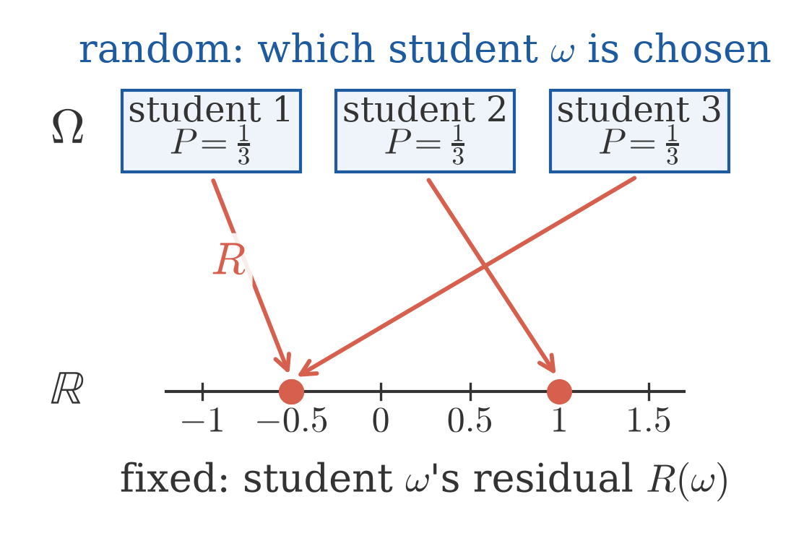
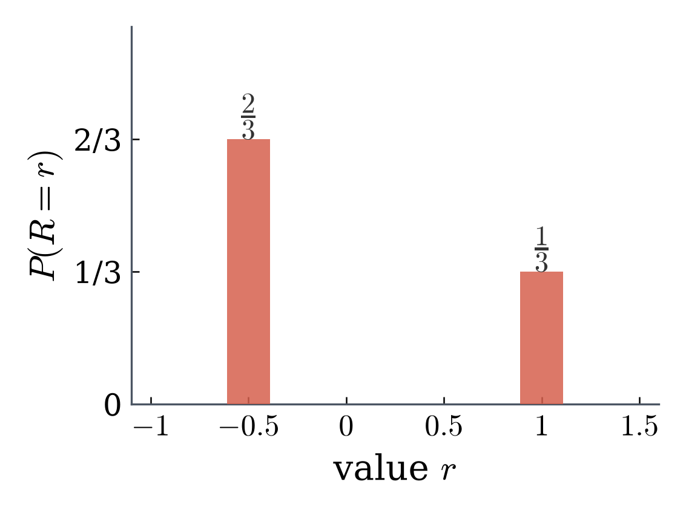
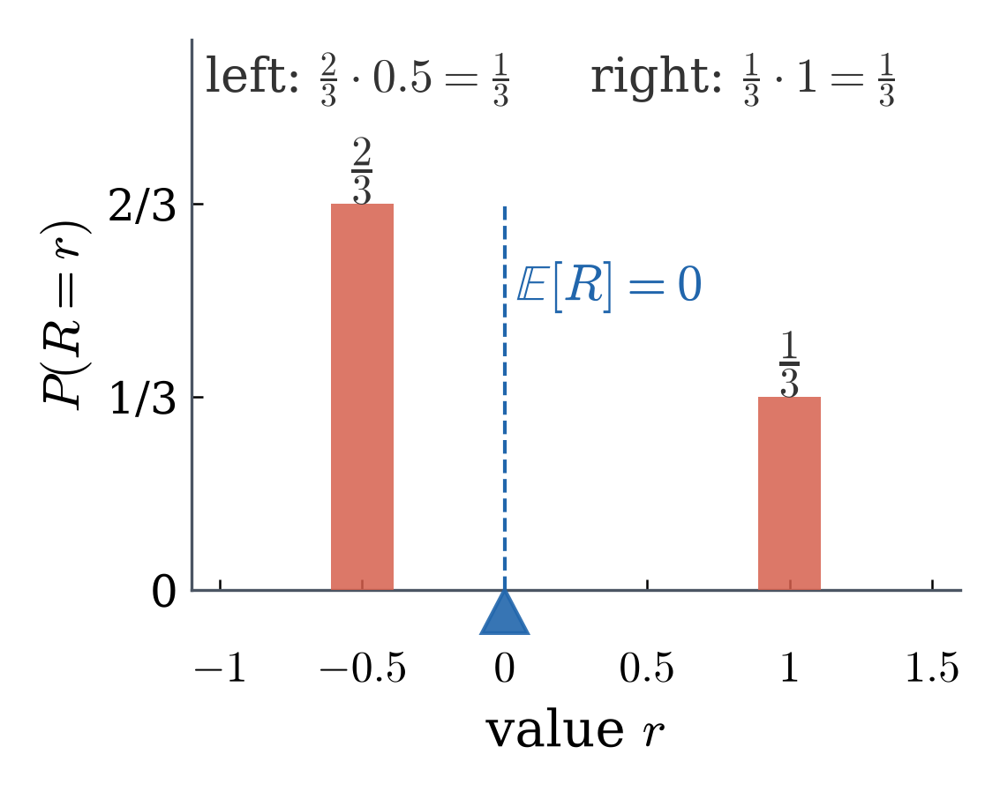
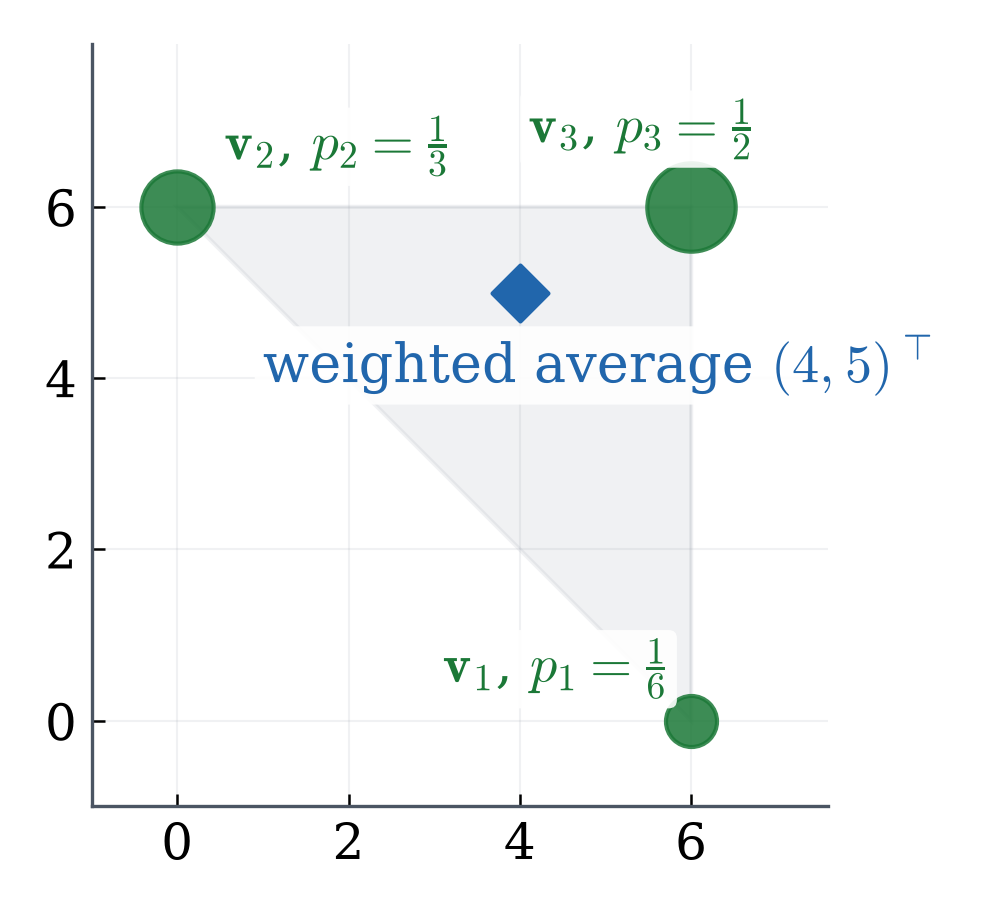
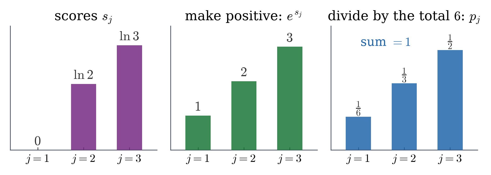

What this unit is for: how sure can we be of what a model learned?
Units 2–5 found the best weights for our three students: \(\hat y=1.5+0.5\,t\), by making the error \(\mathrm{SSE}\) as small as possible.
Real data are noisy: three new students would give different points, and a different best line.
Our line misses every student: residuals \(\mathbf r=(-0.5,\ 1,\ -0.5)^\top\). Is that a failure, or just noise?
And why squared errors? Units 2–5 chose them; nothing yet said they are the right choice.
The question of this unit: what is the mathematics of uncertainty, and what does it say about least squares?
Unit map: one question, five lectures
The question: what is the mathematics of uncertainty, and what does it say about least squares?
lecture
what it asks
the answer is called
L21
a residual of a randomly chosen student: what is it on average?
random variable, expectation (and softmax)
L22
how does new information change a probability?
conditional probability, Bayes’ theorem
L23
how far from its average is a random quantity, typically?
variance, covariance (and \(\sqrt{d_k}\) in attention)
L24
what is the standard shape of noise?
the Normal distribution
L25
if the noise is Normal, which line is most likely?
maximum likelihood = least squares
L21 — Probability Basics, Random Variables, Expectation
Reading:
MML §6.1.2, pp.174–177: sample space, event space, probability; random variable; Example 6.1; eq. (6.8), the distribution
MML §6.2, p.178: the probability mass function
MML §6.4.1, pp.187–189: Definition 6.3 (expected value), eq. (6.29); Definition 6.4 (mean); the Remark with eq. (6.34)
MML §6.4.4, p.193: eq. (6.46), the expected value of a sum
Softmax is not in MML: Goodfellow, Bengio, Courville, Deep Learning (2016), §6.2.2.3, eq. (6.29). Optional: Vaswani et al., Attention Is All You Need (2017), §3.2.1, eq. (1).
The plan:
L19 asked how sure we can be. First, three words, on a die: outcome, event, probability.
Choose one of our students at random: the residual is a random variable, with a distribution.
Its expected value: the residuals average to \(0\); this says nothing about how large the errors are. Linearity.
Attention: a weighted average whose weights softmax makes from scores; read as an expected value.
Where L19 left us: one line, three students, three errors
L19 ended: data are noisy; three new students would give a different \(\mathbf w^\ast\). How sure can we be of what a model learned?
“How sure” needs numbers for how likely. That is probability.
Smallest case first: one student, chosen at random.
Today’s question: if we choose one of the three students at random, what error should we expect the line to make?
Three words first, learned on a die: outcome, event, probability
A separate example, used only to learn three words: outcome, event, probability. We come back to our three students right after. Roll a fair six-sided die once.
question about the roll
the results that answer “yes”
how likely
which results are possible?
\(\{1,2,3,4,5,6\}\)
—
is it a 6?
\(\{6\}\)
\(\tfrac16\)
is it even?
\(\{2,4,6\}\)
\(\tfrac16+\tfrac16+\tfrac16=\tfrac12\)
is it anything at all?
\(\{1,2,3,4,5,6\}\)
\(1\)
Each face gets \(\tfrac16\): the die is fair, so the six results are equally likely.
Every question is a set of results. Its chance: add the chances of the results in it.
Three ingredients: the list of all results, the sets we ask about, and a number for each set. Each one has a name.
Sample space, event, probability [MASTER]
Definition (MML §6.1.2, p.175). An experiment has random outcomes.
The sample space \(\Omega\) is the set of all possible outcomes.
An event is a subset \(A\subseteq\Omega\).
The probability \(P\) assigns a number \(P(A)\) to each event \(A\), with three rules:
\(0\le P(A)\le 1\);
\(P(\Omega)=1\);
if \(A\) and \(B\) share no outcome (\(A\cap B=\emptyset\)), then \(P(A\cup B)=P(A)+P(B)\).
If \(A\), \(B\) share outcomes, subtract the shared part once: \(P(A\cup B)=P(A)+P(B)-P(A\cap B)\).
Our data: choose one of the three students at random

Experiment: choose one student; each equally likely.
Sample space \(\Omega=\{1,2,3\}\), the student’s number; \(\;P(\{\omega\})=\tfrac13\) for each \(\omega\).
student \(\omega\)
\(t\)
\(y\)
\(\hat y=1.5+0.5t\)
residual \(y-\hat y\)
\(1\)
\(0\)
\(1\)
\(1.5\)
\(-0.5\)
\(2\)
\(1\)
\(3\)
\(2\)
\(1\)
\(3\)
\(2\)
\(2\)
\(2.5\)
\(-0.5\)
What is random: which student \(\omega\) is chosen.
Each student’s residual is a fixed number, the last column of the table. Nothing about a student changes.
So the residual we get is a rule: outcome \(\omega\) \(\to\) the residual of student \(\omega\). Students 1 and 3 go to the same number \(-0.5\).
A random variable is a function from outcomes to numbers [MASTER]
Definition (MML §6.1.2, p.175). A random variable is a function from the sample space to the real numbers, \(\;R:\Omega\to\R\).
Ours: \(R(\omega)\) = the residual of student \(\omega\): \(R(1)=-0.5,\ \ R(2)=1,\ \ R(3)=-0.5\).
The chance is in which \(\omega\) is chosen; the rule \(R\) itself is fixed. MML’s margin, p.175: it is “neither random nor is it a variable. It is a function.”
Notation: random variables are capital letters; a lowercase \(r\) is one value \(R\) can take. We never use \(X\): \(X\) is still the data matrix of Units 2–5.
An event written with \(R\) (MML (6.8), p.177):
\[\{R=-0.5\}=\{\omega\in\Omega:\ R(\omega)=-0.5\}=\{1,3\}.\]
Its probability, by rule 3 (\(\{1\}\) and \(\{3\}\) share no outcome): \(\;P(R=-0.5)=P(\{1,3\})=\tfrac13+\tfrac13=\tfrac23\).
The distribution of \(R\): every value, with its probability [MASTER]

Which values can \(R\) take, and how likely is each? (\(R\) = residual of a random student, \(R(1)=R(3)=-0.5\), \(R(2)=1\).)
value \(r\)
event \(\{R=r\}\)
\(P(R=r)\)
\(-0.5\)
\(\{1,3\}\)
\(\tfrac13+\tfrac13=\tfrac23\)
\(1\)
\(\{2\}\)
\(\tfrac13\)
total
\(\Omega\)
\(1\)
Definition (MML §6.1.2, p.177; §6.2, p.178). The distribution of a discrete random variable \(R\) is the list of its values \(r\) with their probabilities \(P(R=r)\). As a function of \(r\), \(P(R=r)\) is the probability mass function (pmf).
Every pmf: \(P(R=r)\ge0\) and \(\sum_r P(R=r)=1\), because the events \(\{R=r\}\) share no outcome and together make \(\Omega\) (rules 1–3).
The residual of a random student: two ways to average it
Residuals of our three students: \(\mathbf r=(-0.5,\ 1,\ -0.5)^\top\). Distribution of \(R\): \(P(R=-0.5)=\tfrac23\), \(P(R=1)=\tfrac13\).
Student by student: \(\;\dfrac{r_1+r_2+r_3}{3}=\dfrac{-0.5+1-0.5}{3}=0\).
Value by value: \(-0.5\) for \(2\) of the \(3\) students, \(1\) for \(1\) of \(3\):
\[(-0.5)\cdot\tfrac23+1\cdot\tfrac13=-\tfrac13+\tfrac13=0.\]
Same number. The second way needs only the distribution table: each value times its probability, then add.
It works for any distribution, also when the outcomes are not equally likely.
The probability-weighted average of the values of a random variable is the number we were asking for. It has a name.
Expected value [MASTER]
Definition (MML Def. 6.3, eq. (6.29), p.187). For a discrete random variable \(R\) and a function \(g\), the expected value of \(g(R)\) is
\[\mathbb E[g(R)]=\sum_{r}g(r)\,P(R=r),\]
the sum over all values \(r\) of \(R\). With \(g(r)=r\) it is the mean of \(R\) (MML Def. 6.4, pp.187–188):
\[\mathbb E[R]=\sum_{r}r\,P(R=r).\]
MML writes \(\mathbb E_X\): the subscript names the random variable whose distribution is used. We drop it when only one random variable is in play.
Also called the expectation or the mean of \(R\).
Recipe: distribution table \(\to\) multiply each value by its probability \(\to\) add.
Our data: \(\mathbb E[R]=0\), the residuals average to \(0\)

\(\mathbb E[R]=\sum_r r\,P(R=r)\), with \(P(R=-0.5)=\tfrac23\), \(P(R=1)=\tfrac13\):
Two students: the line is \(0.5\) too high. One student: \(1\) too low. The residuals average to \(0\): the line is not too high or too low on average.
This says nothing about how large the errors are. A separate example: residuals \(-100\) and \(+100\), each with probability \(\tfrac12\), also average to \(0\).
Picture: \(\mathbb E[R]\) is the balance point of the bars. Left: \(\tfrac23\cdot0.5=\tfrac13\); right: \(\tfrac13\cdot1=\tfrac13\).
Not luck [UNDERSTAND]: at the best \(\mathbf w^\ast\), \(X^\top\mathbf r=\mathbf 0\) (L12). Its first entry is \(\mathbf 1^\top\mathbf r=r_1+r_2+r_3=0\). So every least-squares line with an intercept has \(\mathbb E[R]=0\).
Three questions about expected values that students ask
question
answer
Equally likely outcomes: is the expected value just the plain average?
Yes. \(N\) outcomes, each \(\tfrac1N\), values \(z_1,\dots,z_N\): \(\;\sum_i z_i\cdot\tfrac1N=\bar z\), Unit 3’s empirical mean (MML Def. 6.9, p.192). Ours: \(\tfrac13(-0.5+1-0.5)=0\).
Is the expected value a value we will see?
Not always. A separate example, a fair die \(D\), \(P(D=k)=\tfrac16\): \(\;\mathbb E[D]=\tfrac16(1+2+\dots+6)=3.5\), not a face. It is a weighted average, a balance point.
\(\mathbb E[R]=0\): will the line also average \(0\) error on new students?
Not from this. \(R\) chooses among our three students only, so \(\mathbb E[R]\) describes these data. New students need a model of new data: L24–L25.
\(\mathbb E[R]=0\) does not say how far \(R\) is from \(0\). That number is the variance: L23. (Unit 3 defined the empirical variance of a list; L23 gives its version for a random variable.)
Two shortcuts for expected values, tried on our data
Choose a student at random (each \(\tfrac13\)). Hours \(T\), prediction \(\hat Y=1.5+0.5\,T\), residual \(R\), points \(Y=\hat Y+R\) (since \(R=Y-\hat Y\)).
student \(\omega\)
\(T\)
\(\hat Y=1.5+0.5T\)
\(R\)
\(Y=\hat Y+R\)
\(1\)
\(0\)
\(1.5\)
\(-0.5\)
\(1\)
\(2\)
\(1\)
\(2\)
\(1\)
\(3\)
\(3\)
\(2\)
\(2.5\)
\(-0.5\)
\(2\)
\(\mathbb E\), plain average
\(1\)
\(2\)
\(0\)
\(2\)
directly (last row above)
shortcut
\(\mathbb E[1.5+0.5\,T]\)
\(2\)
\(1.5+0.5\,\mathbb E[T]=1.5+0.5\cdot1=2\)
\(\mathbb E[\hat Y+R]\)
\(2\)
\(\mathbb E[\hat Y]+\mathbb E[R]=2+0=2\)
Both shortcuts gave the right answer here. Do they always?
Linearity of expectation [MASTER]
Theorem (MML Remark, eq. (6.34), p.189; eq. (6.46), p.193). For random variables \(R\), \(S\) on the same sample space and numbers \(a\), \(b\):
\[\mathbb E[aR+b]=a\,\mathbb E[R]+b,\qquad \mathbb E[R+S]=\mathbb E[R]+\mathbb E[S].\]
Proof of the first rule. Assume: \(R\) is discrete with values \(r\) and probabilities \(P(R=r)\). To prove: \(\mathbb E[aR+b]=a\,\mathbb E[R]+b\). Method: Def. 6.3 with \(g(r)=ar+b\), then split the sum.
\(\sum_r (ar+b)\,P(R=r)=a\sum_r r\,P(R=r)+b\sum_r P(R=r)\) — split the sum
\(a\sum_r r\,P(R=r)+b\sum_r P(R=r)=a\,\mathbb E[R]+b\cdot1\) — definition of \(\mathbb E[R]\); the probabilities add to \(1\)
The second rule needs no extra condition: \(R\) and \(S\) may depend on each other, as \(\hat Y\) and \(R\) do. Its proof adds outcome by outcome; MML (6.46).
We can compute a weighted average. Attention computes one too.

An expected value is a weighted average: each value times its weight, then add; the weights are \(\ge0\) and add to \(1\).
Unit 0: attention takes a weighted average of the words’ value vectors \(\mathbf v_j\) (like a GPA). In Vaswani et al., \(\mathbf v_j\) is row \(j\) of \(V\); here a column.
A separate example, three words: \(\mathbf v_1=(6,0)^\top\), \(\mathbf v_2=(0,6)^\top\), \(\mathbf v_3=(6,6)^\top\), weights \(\mathbf p=\left(\tfrac16,\tfrac13,\tfrac12\right)^\top\). The output:
\[\textstyle\sum_j p_j\mathbf v_j=\tfrac16\begin{bmatrix}6\\0\end{bmatrix}+\tfrac13\begin{bmatrix}0\\6\end{bmatrix}+\tfrac12\begin{bmatrix}6\\6\end{bmatrix}=\begin{bmatrix}4\\5\end{bmatrix}.\]
A larger weight pulls the output toward that word’s value: \(\mathbf v_3\), weight \(\tfrac12\), pulls most.
Where do the weights come from? Attention computes them from the words’ scores.
Attention’s weights start from relevance scores
Unit 0: for the blank in “The cat sat on ___”, a dot product scored how relevant each word is: The \(1\), cat \(3\), sat \(2.5\), on \(1.5\).
More relevant word, larger score: “cat” (\(3\)) should get the largest weight.
The weights must be \(\ge0\) and add to \(1\): a probability distribution on the words.
Scores are any real numbers. First try: divide each score by the sum of the scores. It can fail:
scores
divide by the sum
a probability distribution?
\((1,\ 3,\ 2.5,\ 1.5)^\top\)
sum \(8\): \((0.125,\ 0.375,\ 0.3125,\ 0.1875)^\top\)
yes
\((2,\ -1)^\top\)
sum \(1\): \((2,\ -1)^\top\)
no: a negative weight
\((1,\ -1)^\top\)
sum \(0\)
no: cannot divide by \(0\)
How do we turn any scores into a probability distribution, so that a larger score still gets a larger weight?
Make every score positive, then divide by the total

A separate example, three words with scores \(\mathbf s=(0,\ \ln2,\ \ln3)^\top\), chosen so that the exponentials are whole numbers.
Step 1. \(e^{s_j}>0\) for every real \(s_j\), and a larger \(s_j\) gives a larger \(e^{s_j}\): \((e^{0},\ e^{\ln2},\ e^{\ln3})^\top=(1,\ 2,\ 3)^\top\).
Step 2. Divide by the total \(1+2+3=6\): \(\mathbf p=\left(\tfrac16,\ \tfrac13,\ \tfrac12\right)^\top\).
Check: every \(p_j>0\), and \(\tfrac16+\tfrac13+\tfrac12=1\). These are the weights we used to average \(\mathbf v_1=(6,0)^\top\), \(\mathbf v_2=(0,6)^\top\), \(\mathbf v_3=(6,6)^\top\) into \((4,5)^\top\).
Softmax [MASTER]
Definition (Goodfellow, Bengio, Courville, Deep Learning, §6.2.2.3, eq. (6.29); MML does not define it). For scores \(\mathbf s=(s_1,\dots,s_n)^\top\),
\[\mathrm{softmax}(\mathbf s)_j=p_j=\frac{e^{s_j}}{\sum_{k=1}^n e^{s_k}},\qquad j=1,\dots,n.\]
property
why, from the formula
every \(p_j>0\)
\(e^{s_j}>0\), and so is the total
\(p_1+\dots+p_n=1\)
the numerators add up to the denominator
\(s_i>s_j\ \Rightarrow\ p_i>p_j\)
\(e^x\) is increasing; same denominator
add \(c\) to every score: \(\mathbf p\) unchanged
\(e^{s_j+c}=e^c\,e^{s_j}\); \(e^c\) cancels above and below
Scores where dividing by the sum failed: \((2,-1)^\top\to(0.95,\ 0.05)^\top\); \((1,-1)^\top\to(0.88,\ 0.12)^\top\).
Unit 0’s scores \((1,\ 3,\ 2.5,\ 1.5)^\top\to(0.07,\ 0.51,\ 0.31,\ 0.11)^\top\): Unit 0’s percentages. “cat” gets the most.
Reading the attention output as an expected value [MASTER]
The softmax weights are \(\ge0\) and add to \(1\): a probability distribution on the words \(\{1,2,3\}\).
So we may read them as the distribution of a random word \(J\), with \(P(J=j)=p_j\):
word \(j\)
\(1\)
\(2\)
\(3\)
\(P(J=j)\)
\(\tfrac16\)
\(\tfrac13\)
\(\tfrac12\)
\(\mathbf v_j\)
\((6,0)^\top\)
\((0,6)^\top\)
\((6,6)^\top\)
Def. 6.3 with \(g(j)=\mathbf v_j\), entry by entry (MML (6.30), p.187): \(\mathbb E[\mathbf v_J]=\sum_j p_j\,\mathbf v_j=(4,5)^\top\), the attention output.
A way of reading the formula, nothing more: attention does not choose a word at random. It computes \(\sum_j p_j\mathbf v_j\), the same output every time.
Why read it this way: attention’s weights are a probability distribution, so probability tools apply to attention. L23 uses them to explain why the scores are divided by \(\sqrt{d_k}\).
Your turn (1 of 2): the residual of a random student, four students
Your turn. A separate example, not our data: four students, \(\mathbf t=(0,1,2,3)^\top\) hours, \(\mathbf y=(2,0,4,4)^\top\) points. The least-squares line is \(\hat y=1+t\). Choose one student at random, each equally likely; \(R\) = that student’s residual \(y-\hat y\).
(a) Find the four residuals.
(b) Write the distribution of \(R\) as a table.
(c) Find \(\mathbb E[R]\).
(d) Find \(\mathbb E[3R+2]\) with linearity. Then check it from the distribution of \(3R+2\).
Your turn (2 of 2): softmax weights and an attention output
Your turn. A separate example: one word’s scores against three words are \(\mathbf s=(0,\ \ln4,\ \ln5)^\top\). The value vectors are \(\mathbf v_1=(10,0)^\top\), \(\mathbf v_2=(0,10)^\top\), \(\mathbf v_3=(10,10)^\top\).
(a) Find the softmax weights \(\mathbf p\).
(b) Find the attention output \(\sum_j p_j\mathbf v_j\), read as \(\mathbb E[\mathbf v_J]\).
(c) Add \(2\) to every score. What are the new weights?
(d) Which word’s value pulls the output most, and why?
(c) The same, \((0.1,\ 0.4,\ 0.5)^\top\): \(e^{s_j+2}=e^2e^{s_j}\), and \(e^2\) cancels.
(d) Word 3: the largest score, \(\ln5\), gets the largest weight, \(0.5\).
L21 takeaways (1 of 2): probability, random variables, expected value
Sample space \(\Omega\): all outcomes. Event: a subset \(A\subseteq\Omega\). Probability: \(0\le P(A)\le1\), \(P(\Omega)=1\), add over events with no shared outcome; \(P(A^c)=1-P(A)\). [MASTER]
Random variable: a function \(R:\Omega\to\R\); the chance is in which outcome \(\omega\) occurs. Its distribution: each value \(r\) with \(P(R=r)\) (the pmf); probabilities \(\ge0\), adding to \(1\). [MASTER]
Expected value (MML Def. 6.3): \(\mathbb E[g(R)]=\sum_r g(r)\,P(R=r)\); the mean \(\mathbb E[R]=\sum_r r\,P(R=r)\). Equally likely outcomes: the plain average. [MASTER]
Our data, residual of a random student: \(P(R=-0.5)=\tfrac23\), \(P(R=1)=\tfrac13\), \(\mathbb E[R]=0\). [MASTER]
\(\mathbb E[R]=0\) for every least-squares line with an intercept (\(\mathbf 1^\top\mathbf r=0\), L12): the residuals average to \(0\) (the line is not too high or too low on average); this says nothing about how large the errors are. [UNDERSTAND]
L21 takeaways (2 of 2): softmax and attention
Attention output for one word: a weighted average \(\sum_j p_j\mathbf v_j\) of the words’ value vectors. [MASTER]
The weights come from relevance scores. Softmax \(p_j=e^{s_j}\big/\sum_k e^{s_k}\) turns any scores into a probability distribution: positive, adding to \(1\), larger score \(\Rightarrow\) larger weight, unchanged if a constant is added to every score. [MASTER]
Reading the weights as \(P(J=j)\) for a random word \(J\): the output is \(\mathbb E[\mathbf v_J]\). A reading only: attention does not choose a word at random. [MASTER]
Today each student had probability \(\tfrac13\), fixed. Suppose we learn something: the chosen student studied at least \(1\) hour. Is \(P(R=1)\) still \(\tfrac13\)? How should probabilities change when we learn something? L22: conditional probability and Bayes’ theorem.